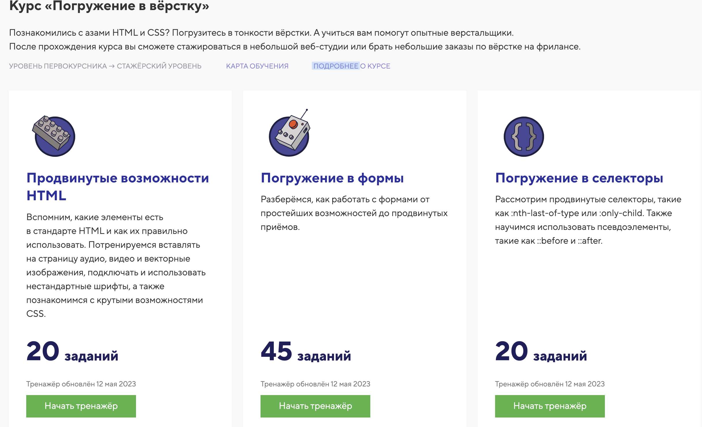

Beginners guide to standing a software engineer for my love Dashulik
На данном этапе обучения (HTML, JS) не стоит пользоваться chatGPT. Можно гуглить на русском и английском

HTML
- Пройти бесплатную часть https://htmlacademy.ru/ курсы: https://htmlacademy.ru/courses/basic-html-css
- После прохождении всех тестовых заданий спросить у меня какой сделать сайт, я найду дизайн

- Выбрать из этих курсов какой больше нравится и пройти его
- Финальный проект от Артема
Задание со звездочкой: разобраться с базовой работой командной строки и git
JAVASCRIPT
Выполнить список заданий, примерный список такой: (USING HTML KNOWLEDGE)
- Попробовать заменить цвет элемента в HTML с помощью клика. То есть при клике текст меняет свой цвет с черного, например на красный. А при еще одном клике меняет его обратно
🚧🚧🚧🚧🚧🚧🚧🚧🚧SITE UNDER CONSTRUCTION 🚧🚧🚧🚧🚧🚧🚧🚧🚧